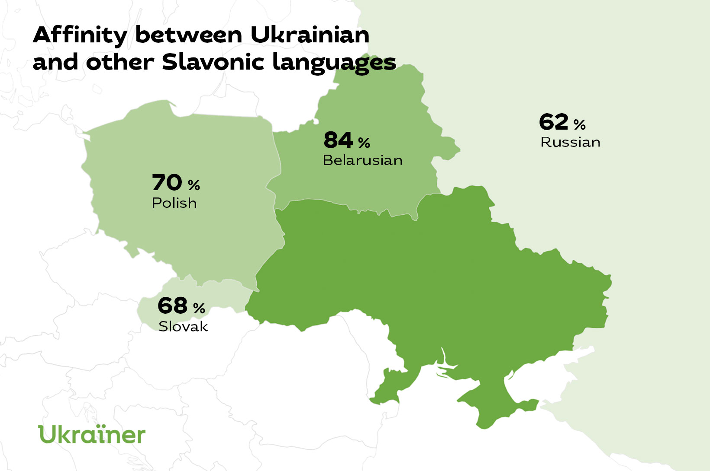
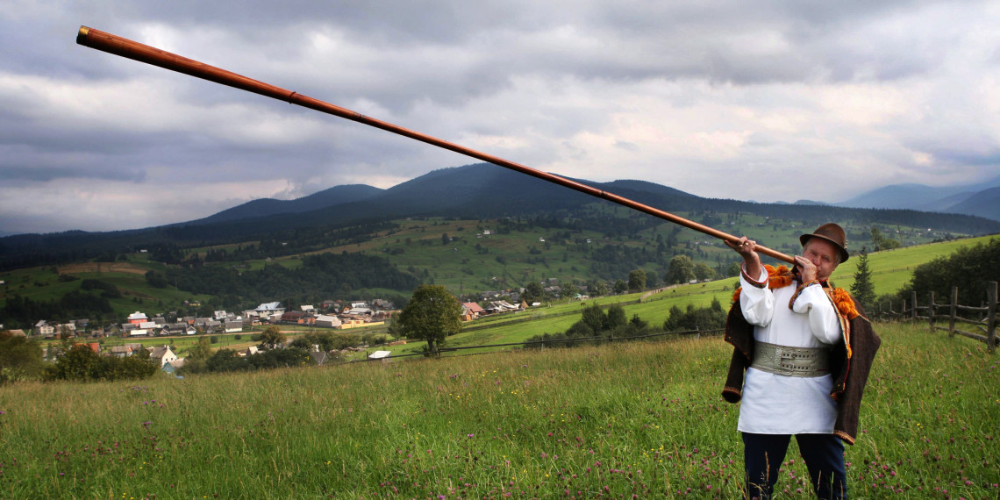
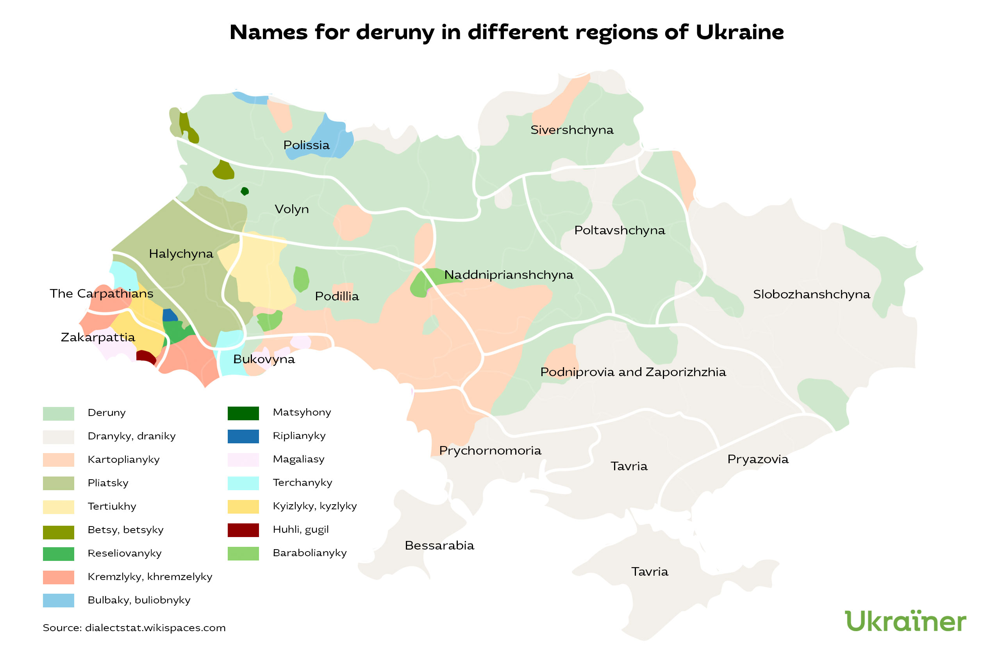
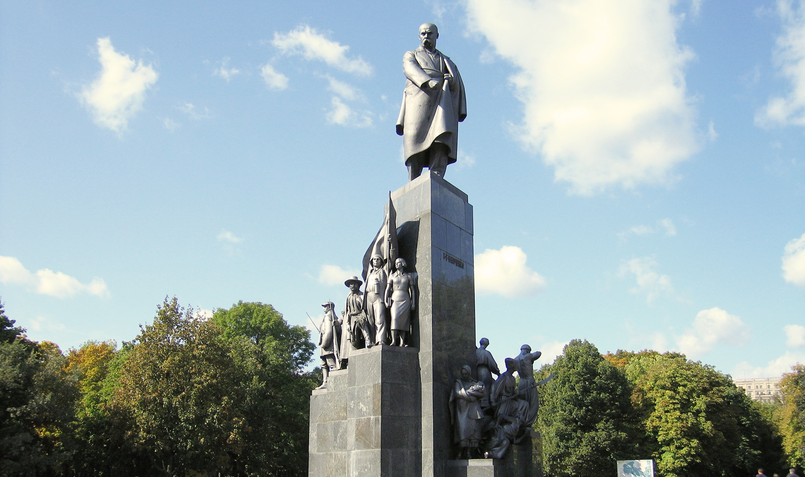

Interesting Facts about Ukraine
List of Facts
Ukrainian and Russian Comparison
Comparisons are often made between Ukrainian and Russian, another East Slavic language, yet there is more mutual intelligibility with Belarusian, and a closer lexical distance to West Slavic Polish and Slovakian.
Ukrainian or Polish?
It is impossible to count the exact number of speakers, but the Ukrainian and Polish languages argue for the status of the second-largest Slavic language, both having more than 40 million speakers worldwide.
Borscht is not a soup
Being the pinnacle of Ukrainian cuisine, Borscht is often put in a different category from other soups by Ukrainians. If a Ukrainian says “soup,” they can mean every soup existing but definitely not Borscht.
Bread Variety
French author Honoré de Balzac claimed to have counted 77 local varieties of bread during his visit to Ukraine in 1848, highlighting the country's rich grain culture.
"Carol of the Bells" is stolen?
The popular Christmas song "Carol of the Bells" is actually an English version of the Ukrainian original song "Shchedryk," arranged by the Ukrainian composer Mykola Leontovych between 1901 and 1919.
The longest instrument
The world's longest musical instrument is the trembita, a Ukrainian folk wind instrument that can be between 2 and 4 meters long, with some specimens reaching 8 meters. It is traditionally used in the Carpathian Mountains.
Deruny or Dranyky
Because of the many dialects in Ukrainian, there are fifteen (maybe even more) different names for deruny (potato pancakes), showcasing regional linguistic diversity.
Who has the most monuments?
Taras Shevchenko has the record for the number of monuments dedicated to him in Ukraine. He also can compete for the world record with 1,167 statues raised to him all over the globe.
Facts Gallery

Map showing language relationships between Ukrainian and other Slavic languages
Listen to the original Ukrainian New Year's song "Shchedryk"

A picture of the longest musical instrument played by a Ukrainian

Map showing different words for deruny in different parts of Ukraine

The monument of Taras Shevchenko in Kharkiv